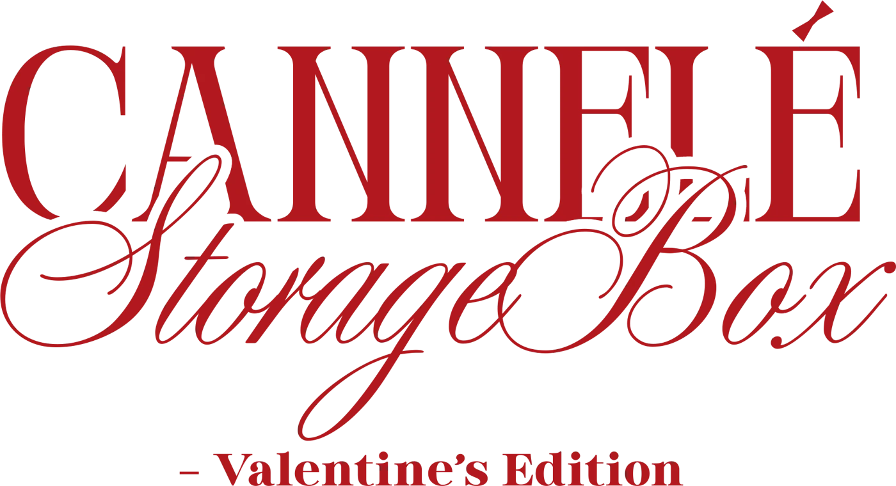
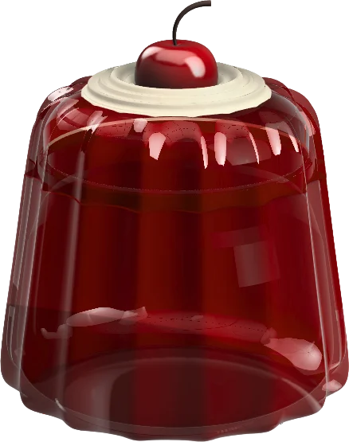

Case study 03 · CAD · 3D printing

A sweet little keepsake that tidies your desk.
A desk organiser shaped like a French cannelé, with a glue-free press-fit lid. Modelled in CAD, drawn to spec and 3D printed in PLA.

01
Design thoughts
Inspired by the iconic French canelé, this compact desk organiser turns small daily clutter into a delightful ritual. As a Valentine’s gift, it combines “love at first sight” looks with storage you actually use, so it’s not just cute, it’s used every day.
- Giftable aestheticsA dessert silhouette with a “topping” decoration: cute, refined and display-worthy.
- Practical storageSeveral scales: small for jewellery and clips, larger for stationery and dessert cutlery.
- Press-fit closureGlue-free and tool-free: easy to open, secure when closed, satisfying to use.
- Two-part designSeparate container and cream-top lid for easier printing, assembly and customisation.